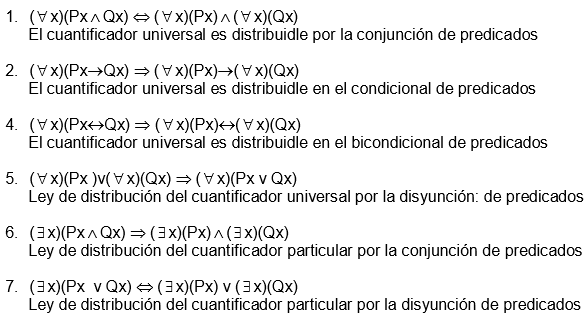
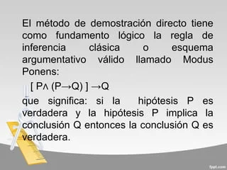

Proposiciones y Conectivos Lógicos
Una proposición es una afirmación que puede ser verdadera o falsa, pero no ambas. Los conectivos lógicos como *AND* (y), *OR* (o), *NOT* (no), *IF...THEN* (si...entonces), y *IFF* (si y solo si), se utilizan para formar nuevas proposiciones a partir de otras ya existentes.

Tablas de Verdad
Las tablas de verdad son herramientas que se utilizan para determinar la veracidad de proposiciones compuestas. Se listan todas las posibles combinaciones de valores de verdad para las proposiciones simples y se calcula el valor de verdad de la proposición compuesta.

Argumentos y Falacias
Un argumento es una serie de proposiciones donde algunas se ofrecen como justificación para aceptar otra proposición llamada conclusión. Las falacias son errores de razonamiento que ocurren en los argumentos y afectan su validez.

Cuantificadores y Lógica de Predicados
La lógica de predicados extiende la lógica proposicional al incluir cuantificadores como *∀* (para todo) y *∃* (existe al menos uno). Esto permite expresar afirmaciones sobre conjuntos de elementos y sus propiedades.

Métodos de Demostración
En lógica, existen varios métodos para demostrar la veracidad de proposiciones, como la *demostración directa, la **demostración por contradicción, y el **método de inducción matemática*.
